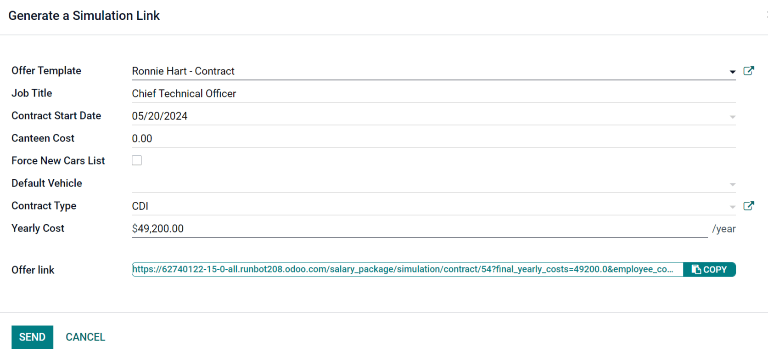

Contracts
Every employee in Odoo is required to have a contract in order to be paid. A contract outlines the terms of an employees position, their compensation, working hours, and any other details about their position.
Important
Contract documents (PDFs) are uploaded and organized using the Documents application, and are signed using the Sign application. Ensure these applications are installed in order to send and sign contracts. Please refer to the Documents and Sign documentation.
To view the employee contracts, go to the from the top menu. All employee contracts, and their current contract status, are displayed in a Kanban view, by default. The Kanban view displays running contracts, contracts that require action, expired contracts, and cancelled contracts.
Note
The list of contracts in the Payroll application matches the list of contracts in the Employees application.
Create a new contract
In order for an employee to be paid, an active contract is required. If a new contract is needed, click the Create button on the Contracts dashboard. A contract form appears where the information can be entered. Required fields are underlined in bold.
New contract form

Contact Reference: type in the name or title for the contract, such as
John Smith Contract. This field is required.Employee: name of the employee the contract applies to.
Contract Start Date: the date the contract starts. Choose a date by clicking on the drop-down menu, navigating to the correct month and year by using the (arrow) icons, then clicking on the desired date. This field is required.
Contract End Date: the date the contract ends. Choose a date by clicking on the drop-down menu, navigating to the correct month and year by using the (arrow) icons, then clicking on the desired date. This field is required.
Salary Structure Type: select one of the salary structure types from the drop-down menu. The default salary structure types are Employee or Worker. A new salary structure type can be created by typing the name in the field. This field is required.
Working Schedule: select one of the working schedules from the drop-down menu. This field is required.
Department: the department the contract applies to.
Job Position: the specific job position the contract applies to.
Wage on Payroll: the amount to be paid to the employee each month.
Contract Type: choose from CDI, CDD, or PFI from the drop-down menu.
CDI is an open-ended contract with only a start date, but no end date.
CDD is a contract with both a start date and an end date.
PFI is a Belgian-specific contract used when hiring employees that need training, and covers the training period specifically.
HR Responsible: if there is a specific person in HR that is responsible for the contract, select the person from the drop-down menu. This field is required.
Tip
The Working Schedule drop-down menu displays all the working times for the selected Company. To modify or add to this list, go to , and either Create a new working time, or click on an existing working time, then edit it by clicking Edit.
Contract details
The Contract Details tab allows for the addition and editing of a contract, along with specifying which template to use when a new contract is created. These fields must be populated in order to create a new contract.
Important
To access the various contract template fields in the Contract Details tab, the
Salary Configurator (hr_contract_salary) module must be installed.
When the Salary Configurator module is installed, the Salary Configurator - Holidays and Salary Configurator - Payroll modules install, as well.
Once the modules are installed, the database reverts to the main dashboard.

Analytic Account: this field allows a link between the contract and a specific analytic account for accounting purposes.
Contract Template: select a pre-existing contract template from the drop-down menu. Contract templates are typically created through the Recruitment application.
New Contract Document Template: select a contract from the drop-down menu to be modified for this new employee contract.
Contract Update Document Template: select a contract from the drop-down menu, if the employee has an existing contract that requires updating.
Notes: the notes field is a text field where any notes for the employee contract can be entered for future reference.
Modify a contract template
Click the (external Link) icon at the end of either the New Contract Document Template or Contract Update Document Template to open the corresponding contract template, and proceed to make any desired changes.

A pop-up window appears with all the contract details. Modify the fields for the contract as needed.

Tags: select any tags associated with the contract.
Signed Document Workspace: this is where the signatures are stored. Choose a pre-configured workspace, or create a new one. To create a new Signed Document Workspace, type in the name of the workspace, then click either Create to add the new workspace, or Create and Edit to add the workspace and modify the workspace details.
Signed Document Tags: select or create any tags that are only associated with the signed contract, as opposed to the original unsigned contract.
Redirect Link: enter a redirect link for the employee to access the contract. A redirect link takes the user from one URL to another. In this case, it takes them to the newly-updated contract specifically written for them.
Who can Sign: select either All Users or On Invitation.
All Users: any user in the organization can sign the contract.
On Invitation: only users selected in this field can sign the contract.
Invited Users: select the person (or people) that can sign the document.
Document: the attached document can be replaced by clicking the (pencil) icon. A pop-up window appears, so another document can be selected for upload. The file must be a PDF. To remove the document, click the (trash can) icon.
Once the edits are complete, click the Save button. All the information for the selected contract template populates the fields in the Salary Information tab. Any additional tabs, such as Personal Documents, appears if applicable.
Salary information

This section is where the specific salary details are defined. This section is country-specific, so these fields vary, depending on where the company is located.
Enter the amount in the various fields, or tick a checkbox to apply a benefit. Some options that can be entered here include Group Insurance Sacrifice Rate and Canteen Cost, for example.
Some fields may be automatically filled in as other fields are entered. For example, the Yearly Cost (Real) and Monthly Cost (Real) updates once the Wage is populated.
Personal documents
This tab only appears after an Employee is selected, and houses any documents that are linked to the employee on their employee record. Documents cannot be added to this tab, this tab only shows documents that are already uploaded and associated with the employee.
The available documents in this tab can be downloaded. Click the (download) icon next to the document to download it.
Save and send the contract
Once a contract has been created and/or modified, save the contract by clicking the Save button. Next, the contract must be sent to the employee to be signed.
Click on one of the following buttons to send the contract to the employee:

Generate Simulation Link: this option is only for Belgian companies. Clicking this opens a pop-up window that contains the basic information from the contract, as well as a link for the contract when using the salary configurator. Click Send to send an email to the employee, so they can sign the contract.
Note
In order to send a contract using the Generate Simulation Link, there must be a signature field in the contract PDF being sent to the employee, so they can sign it.
Signature Request: clicking this reveals a pop-up window, where an email can be typed to the employee. Select the document (such as a contract, NDA, or Homeworking Policy) from the drop-down menu, and fill out the email section. Click Send when the email is ready to be sent.
Salary attachments
Any automatic deductions or allocations for an employee, such as child support payments and wage garnishments, are referred to as a salary attachment. This section is where all of these deductions or allocations are set.
To add a new deduction, first navigate to . Next, click Create, and a new salary attachment form loads.

Fill out the following fields on the form:
Employee: using the drop-down menu, select the employee the salary attachment applies to.
Description: enter a short description for the salary attachment, such as
Child Supportor529 Contribution.Type: using the drop-down menu, select the type of salary attachment being created. Choose from:
Attachment of Salary: any payments taken out towards something that is not child support. Typically any garnishments, such as lawsuit payments, payments toward taxes owed, etc.
Assignment of Salary: any deduction that is not required, but voluntary, such as a pre-tax allocation to a college savings account.
Child Support: any payments taken out specifically for child support.
Start Date: the date the salary attachment starts. Choose a date by clicking on the drop-down menu, navigating to the correct month and year by using the (arrow) icons, then clicking on the desired date. This field is required.
Estimated End Date: this field automatically populates after both the Monthly Amount and Total Amount fields are populated. This field is not modifiable.
Document: attach any documents relevant to the salary attachment. Click the Upload Your File button, navigate to the desired document in the file explorer, then click Open to select the document, and attach it to the form. To change the attached document, click the (pencil) icon, and select a different document. To remove a document, click the (trash can) icon.
Monthly Amount: enter the amount to be taken out of the employees paycheck every month for this specific salary attachment.
Total Amount: enter the total amount that the employee pays for the salary attachment to be completed.